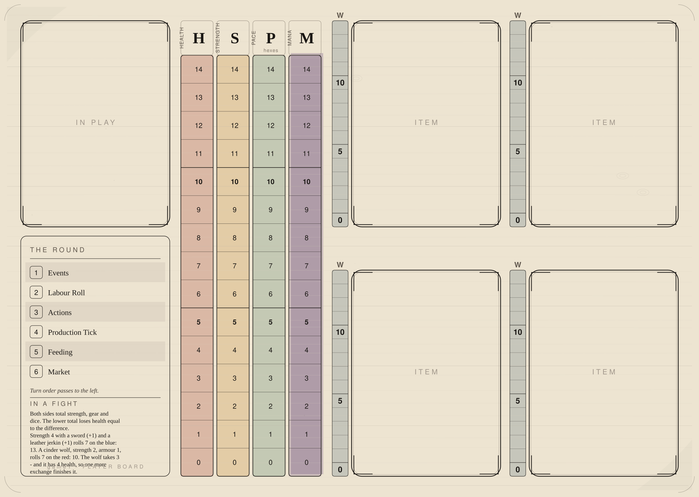

One per player, one per vehicle in play, and one spare for the table, and every one identical. The card in play top left, four tracks up the middle, four cards of kit on the right each with its own wear ladder against it, and the round's phases under it.
The board says nothing about who is playing it - or about whether who is playing it is a person, or alive. People, calling, health, strength, armour and what can be shouldered are all printed on the card in the recess, which is the thing that changes; the board is the furniture that card sits in. Being generic is what lets one design serve a player, a dealt monster, a stranger met on the road and the wagon they are all arguing about.
Generated by tools/build-board.mjs from data/playerboard.json and
data/components.json — edit those, re-run the tool, and never these files. Print one copy per player:
set your printer to 100% and landscape and turn off "fit to page", and the 3 mm of bleed the board is
drawn with runs off the edge of the paper, which is the only place bleed is any use.
Four of them run up the middle of the sheet and are about the figure in the recess. The fifth is drawn 4 times, once against each kit slot, and is about the card lying in that slot rather than about the player — which is why it is beside the card and not in the middle, and why it is walked by a 4.5 mm pip where a column takes a 7 mm bar.
| Track | Where | Runs | What walks it | |
|---|---|---|---|---|
| H | HEALTH | a column up the middle | 0–14 | Down as the figure takes hits, and up under medical aid alone - 3 a round with a healer or in an infirmary, 2 from a physician who happens to be standing there. Sleeping does not mend it. A round that ends with nothing to eat costs 1. A VEHICLE runs the same column and reads it as its hull: set it from the card, down as it is damaged, up as it is repaired - one rung a round in any settlement of town rank or better, at 5 coin a rung. |
| S | STRENGTH | a column up the middle | 0–14 | Set it from the card at setup and knock it down a rung for every night the party does not make camp. One night's sleep puts all of it back, wherever that night is taken. |
| P | PACE (hexes) | a column up the middle | 0–14 hexes | Set it at the start of a leg to the speed in travel.json for the mode and the ground, then walk it down a rung per hex entered. Halve it for a night leg under a lantern; a torch buys one hex, two on a road. |
| M | MANA | a column up the middle | 0–14 | Everything the hero can hold at once: what their body holds innately, plus every talisman in a slot. Slaying a monster fills it; casting spends it. |
| W | WEAR | 4 ladders, one per kit slot | 0–14 | Down. Set it from the W box on the card the moment the thing is put in the slot beside it, knock it down a rung every time the thing is used, and put it back up as a blacksmith mends it - three rungs a round, four coin a rung. |
